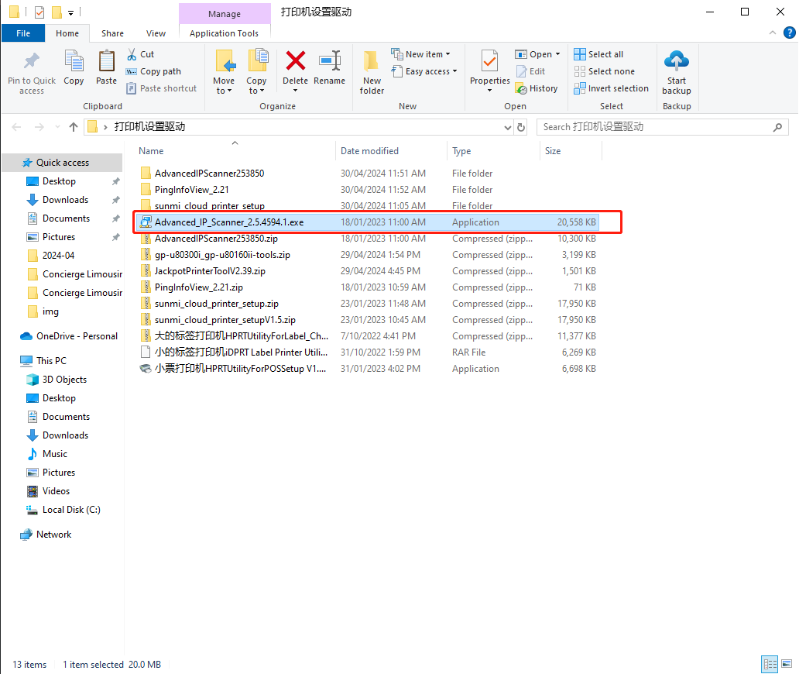
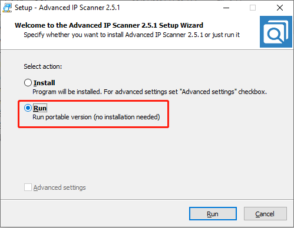
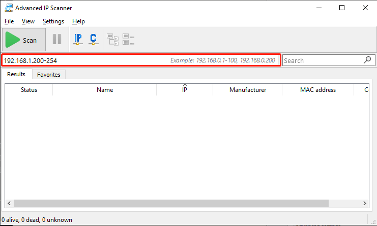
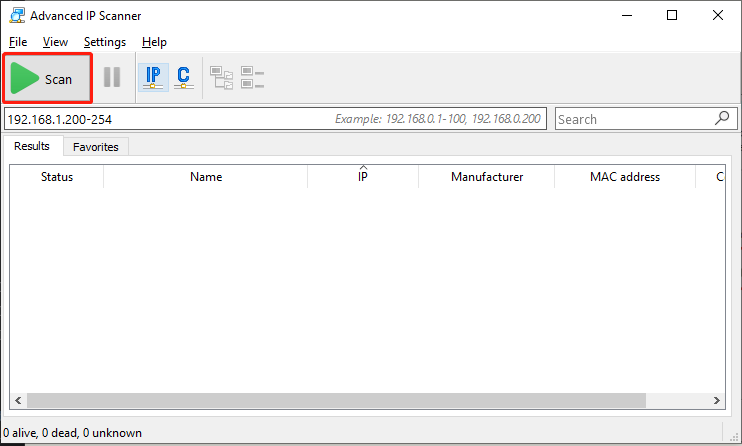
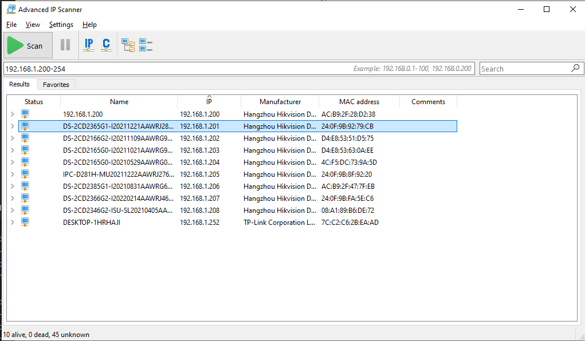

Advanced IP Scanner 使用
2024年11月13日 · Charlie
请注意：此软件只能在Windows上使用
Advanced IP Scanner下载链接如果觉得使用 CMD/Terminal 检查 IP方式太麻烦的话，使用 Advanced IP Scanner会更方便
RUN 可以免安装
选择搜索 IP区间范围，安装我们的系统使用 200以后的 IP
192.168.1.200-254
点击 Scan
扫描完成后，即可看到一下IP 已被使用，所以请避免使用
